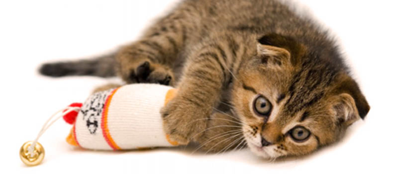

Tips for Better Care of My Cat
Here we list some shocking truths related to the safty of your cat.
7 MUST-KNOW HOUSEHOLD HAZARDS FOR CATS
- Strigns Can Kill
- If ingested, string, thread, ribbon, yarn, etc. can cause life-threatening intestinal issues in cats.
- Look Before You Lock
- It may seem strange, but some cats like to hang out inside the washer or dryer. Be sure to keep your kitty safe by looking before starting your laundry.
- Pass on the Milk
- What's a better treat for kitty than a nice warm bowl of milk? Almost anything. Most cats are lactose intolerant, so a big bowl of milk for kitty will likely equal a big litter box mess for you. Side effects include vomiting, diarrhea and upset stomachs, Susan G. Wynn, an animal nutritionist in Atlanta, tells WebMD.
- Watch Those Wires
- Many cats can shock themselves and/or burn their mouths from chewing on wires around your house.
- Screen Your Screens
- Cats love to look out the window, but make sure your kitty is safe by checking and re-checking your screens. Cats may fall out unscreened or poorly-screened windows. In fact, it happens often enough to have a name: feline high-rise syndrome.
- Take a Peek at Your Plants
- Many cats like to snack on household plants. In fact, a great way to enrich your cat's environment is to keep cat grass in your windowsill.
- Ban Those Rubber Bands
- Much like string, rubber bands can cause serious and possibily fatal intestinal problems if they're ingested by cats. Lucky us, there's a simple fix - putting away your rubber bands and hair ties not only keeps your cat safe, it also keeps the house looking great!